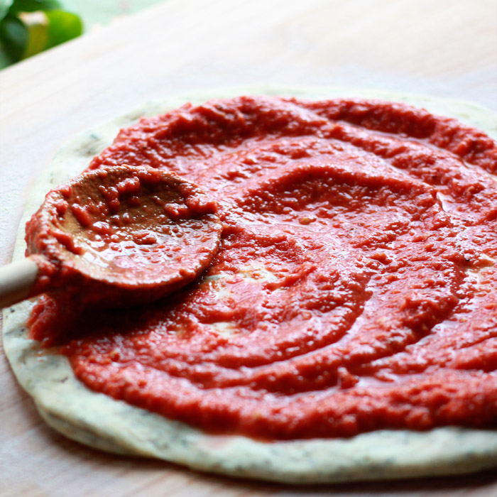

<!DOCTYPE html>
<html lang="en">
    <meta charset="UTF-8">
    <title>New York Pizza sauce</title>
    <link rel="stylesheet" href="sauce.css">
</html>

<body>
    
    <h1>Pizza Sauce</h1>
    <p><strong>Ingredients</strong></p>
    <ul>
        <li>1 (28-ounce) can tomatoes sauce</li>
        <li>1 tablespoon (15ml) extra-virgin olive oil</li>
        <li>2 medium cloves garlic, grated on microplane grater (about 2 teaspoons)</li>
        <li>1 tablespoon (15ml) unsalted butter</li>
        <li>Pinch red pepper flakes  </li>
        <li>1 medium yellow onion, peeled and split in half</li>
        <li>Kosher salt</li>
        <li>1 teaspoon dried oregano</li>
        <li>2 (6-inch) sprigs fresh basil with leaves attached</li>
        <li>1 teaspoon sugar</li>
    </ul>

    <p><Strong>Instructions</Strong></p>

    <ol>
        <li>  Combine oil and butter in medium saucepan and heat over medium-low heat until butter is melted. 
            Add garlic, oregano, pepper flakes, and large pinch salt and cook, stirring frequently, 
            until fragrant but not browned, about 3 minutes. Add tomatoe sauce, onion halves, basil sprigs, and sugar. 
            Bring to a simmer, reduce heat to lowest setting (bubbles should barely be breaking the surface), 
            and cook, stirring occasionally, until reduced by half, about 1 hour. Discard onions and basil stems. 
            Season to taste with salt. Allow to cool and store in covered container in the refrigerator for up to 2 weeks. </li>
        
    </ol>
</body>